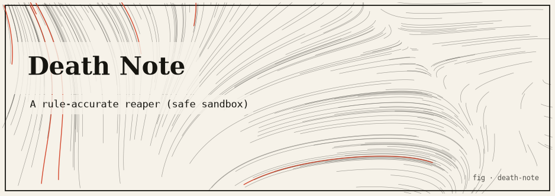

death-note
A safe, sandboxed process reaper: write a name into a /dev/deathnote-style CLI and the named target — a process the tool spawned and owns — is terminated. No kernel access required.

The idea
In Death Note, writing a person’s name in the notebook causes their death. This package models that as a process lifecycle manager: the tool spawns named sandbox processes (simulated workers), maintains a registry, and terminates any process whose name you write into the CLI. The processes are threads or child processes that the tool created and owns — the tool cannot affect any external process.
The constraint is strict: the death note can only kill processes it spawned. Attempting to register a PID from outside the sandbox is rejected. This keeps the project entirely safe while modelling the concept faithfully.
How it works
- Spawns a pool of named worker threads, each with a unique name (the “target”).
- Maintains a registry mapping names to thread handles or process IDs.
- Accepts names via stdin or CLI argument. If the name is in the registry, sends a shutdown signal to that worker and removes it from the registry.
- Workers outside the registry cannot be addressed — the tool refuses with an error.
- Written in safe Rust (
#![forbid(unsafe_code)]).
Run it
git clone https://github.com/caelum0x/awesome-mad-projects.git cd death-note cargo test cargo run # Spawning workers: alpha, beta, gamma, delta ... # Write a name to terminate: beta # [beta] received shutdown signal — terminated. # Remaining: alpha, gamma, delta